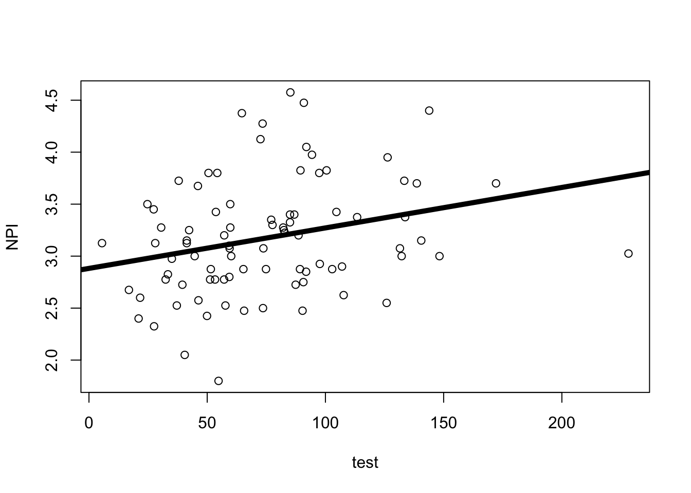
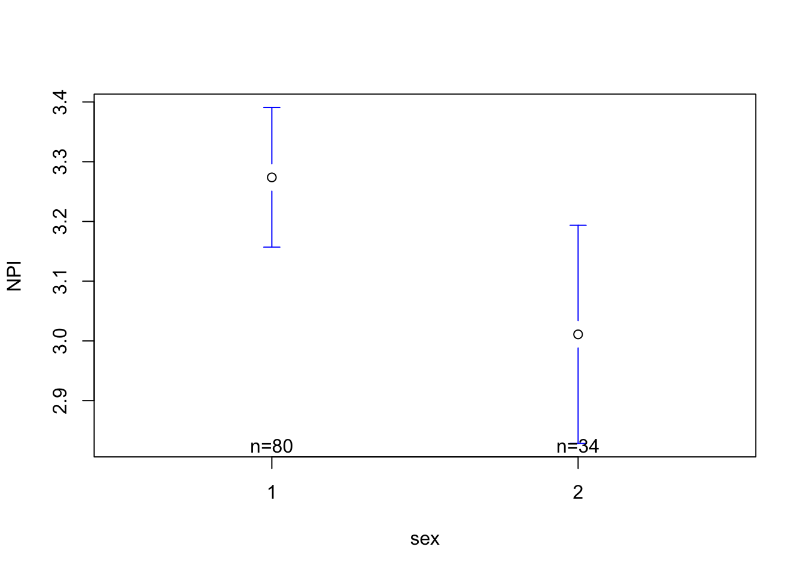
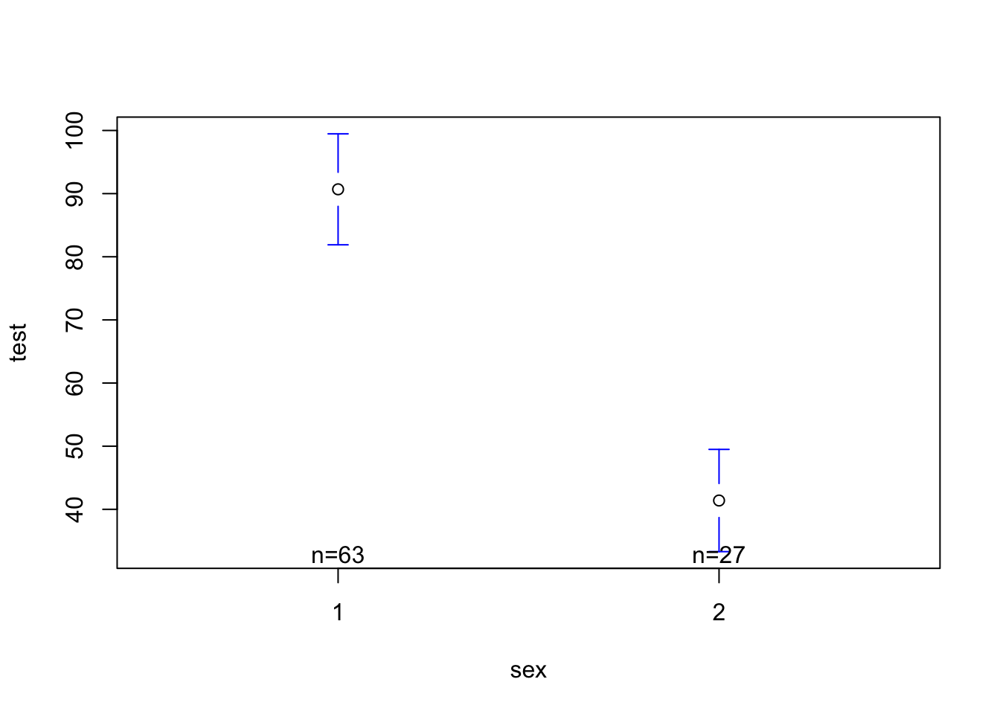

h <-read.csv("~/Dropbox/!WHY STATS/Chapter Datasets/Hormone Data/hormone_dataset.csv", stringsAsFactors = T)mod1 <-lm(NPI ~ test, data = h)plot(NPI ~ test, data = h)abline(mod1, lwd =5)

summary(mod1)
Call:
lm(formula = NPI ~ test, data = h)
Residuals:
Min 1Q Median 3Q Max
-1.29549 -0.36339 -0.02748 0.27697 1.36124
Coefficients:
Estimate Std. Error t value Pr(>|t|)
(Intercept) 2.882071 0.126950 22.702 <2e-16 ***
test 0.003894 0.001502 2.593 0.0112 *
---
Signif. codes: 0 '***' 0.001 '**' 0.01 '*' 0.05 '.' 0.1 ' ' 1
Residual standard error: 0.5375 on 84 degrees of freedom
(36 observations deleted due to missingness)
Multiple R-squared: 0.07414, Adjusted R-squared: 0.06311
F-statistic: 6.726 on 1 and 84 DF, p-value: 0.01121
library(gplots)mod2 <-lm(NPI ~ sex, data = h)plotmeans(NPI ~ sex, data = h, connect = F)

summary(mod2)
Call:
lm(formula = NPI ~ sex, data = h)
Residuals:
Min 1Q Median 3Q Max
-1.47375 -0.34557 -0.02989 0.36079 1.36397
Coefficients:
Estimate Std. Error t value Pr(>|t|)
(Intercept) 3.5365 0.1478 23.925 <2e-16 ***
sex -0.2627 0.1074 -2.446 0.016 *
---
Signif. codes: 0 '***' 0.001 '**' 0.01 '*' 0.05 '.' 0.1 ' ' 1
Residual standard error: 0.5245 on 112 degrees of freedom
(8 observations deleted due to missingness)
Multiple R-squared: 0.05073, Adjusted R-squared: 0.04225
F-statistic: 5.985 on 1 and 112 DF, p-value: 0.01598
mod3 <-lm(test ~ sex, data = h)plotmeans(test ~ sex, data = h, connect = F)

summary(mod3)
Call:
lm(formula = test ~ sex, data = h)
Residuals:
Min 1Q Median 3Q Max
-60.144 -17.211 -3.365 12.111 137.486
Coefficients:
Estimate Std. Error t value Pr(>|t|)
(Intercept) 139.972 9.935 14.088 < 2e-16 ***
sex -49.288 7.208 -6.838 1.01e-09 ***
---
Signif. codes: 0 '***' 0.001 '**' 0.01 '*' 0.05 '.' 0.1 ' ' 1
Residual standard error: 31.34 on 88 degrees of freedom
(32 observations deleted due to missingness)
Multiple R-squared: 0.347, Adjusted R-squared: 0.3396
F-statistic: 46.76 on 1 and 88 DF, p-value: 1.014e-09
Some Pre-Recorded NHST Review Videos
Note : I used last semester’s dataset for these examples, so you will likely get different results if you try and replicate in this semester’s class; a good example of how NHST doesn’t really tell us whether the results are “truth” or not, or whether they will replicate, etc.
The introduction starts broad, but then quickly focuses on the variables in your model so readers can understand a) what your study is about and b) why you’re doing your study.
Section
Brief Explanation
1. The Opening
Describe the question you have, and explain why this question matters
2. The Review
Describe what past research and theory has to say on the question and your theory. Your goal is to give the reader the background they need to understand why you are doing your study; you don’t need to cover EVERY single issue on your topic..
3. The Critique
Explain why the past research is not “the final truth”, and what other new questions might be important to consider (and why these questions matter). Only point out limitations with past research that you will address in your study; other limitations that you think future research will address should go in the discussion section.
4. The Current Research
Explain what specific questions your study will address. Be clear by stating each idea as a hypothesis with language like, “I predict” or “My first hypothesis”.
Activity : Deconstruct an Introductin
Read an excerpt from the introduction1; identify (in the margins) each of part of the introduction (“The Opening”, “The Review”, “The Critique”, and “The Current Research”)
THE EVIDENCE : How have psychologists operationalized or studied this variable in the past? [Citation]
WHO CARES : Why should we care about this topic?
IV1 (Past Research) :
THE POINT : What is your independent variable?
THE EVIDENCE :
How do psychologists operationalize this variable?
Summarize at least one past research study on this independent variable, and how this IV is (or might be) related to your DV. [Citation]
WHO CARES : Why does this research matter to your topic?
ANOTHER POINT YOU COULD MAKE : Are there any limitations with this past research that you will address in your study (this could set up IV2)?
THE EVIDENCE : why (research or common sense) might these limitations interfere with our VALID KNOWLEDGE about the DV?
WHO CARES : why should we care about these limitations?
IV2 (The Critique / Past Research) :
THE POINT : What is another independent variable that might be related to your dependent variable?
THE EVIDENCE : How has this variable been defined / studied in the past? [Citation]
WHO CARES : Why might this variable be important to look at / change the relationship between IV1 and the DV? [Citation or Logic Goes Here]
The Present Research (The Current Study) :
THE POINT : What is the goal of your research? Include your specific predictions in a summary table.
THE EVIDENCE : What will your research do? You don’t need to fully explain the methods for your study, but instead should set up the broad ideas of what you hope to do.
WHO CARES : How does your study advance past research?